AI Academy · Level 1 · Grade 6 · Week 6 · Student lesson
Sound Becomes a Signal
Learn to understand, design, build, test and explain AI systems responsibly.
Project: Helpful Classroom Sorter
Before you start
Week 3: comparisons need shared sensor settings.
Plan time to read, investigate and explain. Keep predictions separate from observations.
Student lesson · 1 of 18
Your mission
Start with the target: Interpret an ordered sequence of sound-signal samples with a stated time interval. Try the recall before opening notes.
Your learning target
I can interpret an ordered sequence of sound-signal samples with a stated time interval.
I can explain why summaries or sparse samples can omit changes.
I can separate an audio recording, a transcript and an interpretation of meaning.
Remember before reading
Close your notes first. A rough first answer helps us choose the right starting point; it is not a score for your ability.
Without opening the old lesson, explain one key idea from Pictures Become Numbers. Give an example and a mistake that the idea helps you avoid.
Without opening the old lesson, explain one key idea from Sensors Are Messengers. Give an example and a mistake that the idea helps you avoid.
After trying, check the relevant lesson or ask your teacher. Change the part of your explanation that the evidence shows was wrong.
Computers receive changing measurements, not human-like hearing.
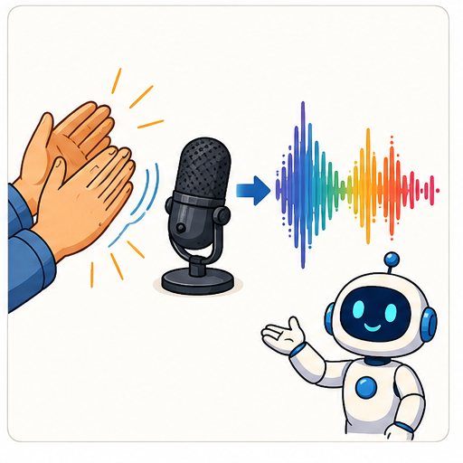
Your target
LEARNING TARGET A whisper recorded close to a microphone has larger sample amplitudes than a shout recorded far away. Does the recording prove the whisper was louder at its source? Propose one controlled follow-up.
Learner name:
Readiness for the connected explanation
Two image grids have the same number of black pixels. Why can their pictures differ?
This week’s end goal
By the end, I can connect ordered sound samples to timing and explain what a maximum loses.
Student lesson · 2 of 18
Notice the evidence
Investigate the supplied Sound Becomes a Signal case. Separate observations, given facts and assumptions before choosing an explanation.
PICTURE STORY
Look Closely Before You Explain
Pictures give clues; evidence tells us what the clues mean.

Start with this puzzle
MYSTERY A microphone converts air-pressure changes into a sequence of measured values that can be plotted as a waveform.
What do you notice?
Name three visible details without explaining them yet.
Circle the detail most connected to the system's decision.
Name one detail that may be decoration or distraction.
Make a first prediction and state the clue that supports it.
My observations, prediction, and evidence:
Thinking habit
GOOD THINKING A prediction can change when stronger evidence appears.
A closer explanation
Sound involves changing pressure in a medium such as air. A microphone responds to that variation and produces a changing signal. A digital recording stores measurements of the signal at successive times.
The values are ordered: swapping their times changes the represented pattern.
We will use tiny invented sequences to study this idea on paper. Their values are arbitrary signal units, not decibels or a test of safe listening levels.
Real audio uses many more samples, so our five-point examples should not be played as if they were a realistic recording of speech.
A recording must include enough information to interpret the values, including their time spacing and encoding. The sequence 0,2,0,2,0 does not by itself say how quickly the changes happened.
This is similar to needing image dimensions as well as pixel values.
Student lesson · 3 of 18
See how it works
Follow the mechanism for Sound Becomes a Signal. Connect each labelled input, deciding step and result.
VISUAL MECHANISM
Input → Process → Output
Follow the information instead of imagining magic inside the machine.
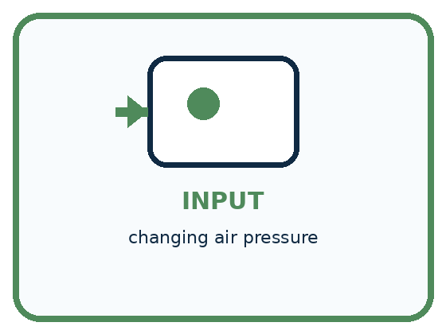
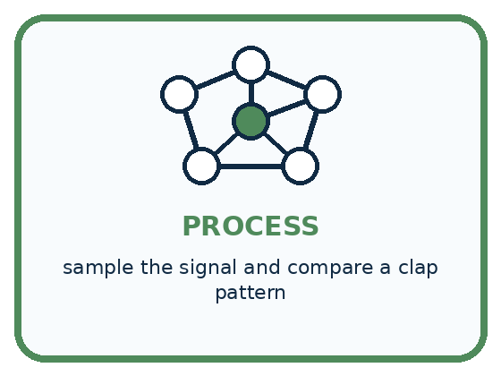
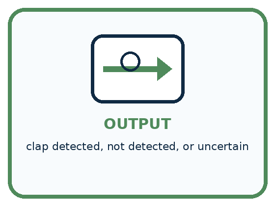
INPUT changing air pressure
PROCESS sample the signal and compare a clap pattern
OUTPUT clap detected, not detected, or uncertain
Key idea
CORE IDEA Computers receive changing measurements, not human-like hearing.
How the mechanism works
UNDER THE HOOD Audio is represented by samples taken over time. Sample rate describes how often measurements are taken; amplitude describes signal strength.
Noise can overlap the target pattern, so detection requires a decision rule or model and an uncertainty policy.
Draw a fresh example with all three stages:
A closer explanation
Three stages in a speech system
| Time in milliseconds | 0 | 1 | 2 | 3 | 4 |
|---|---|---|---|---|---|
| Invented signal value | 0 | 2 | 0 | 2 | 0 |
There are five samples with four gaps between the first and last. Each gap is 1 millisecond, so the elapsed time from first to last is 4 milliseconds.
If the same five values were spaced 2 milliseconds apart, they would span 8 milliseconds. Equal value lists with different timing do not describe the same time pattern.
Connect the picture and the explanation
Point to the input, the deciding step and the result in this week’s visual. Explain the same step in ordinary words. A picture helps when you can say what each part represents.
Student lesson · 4 of 18
Compare the cases
Compare the supplied cases for Sound Becomes a Signal. Identify the detail that changes the conclusion.
PICTURE GALLERY
Four Cases, Four Clues
Use the visual cue, then read the evidence carefully.
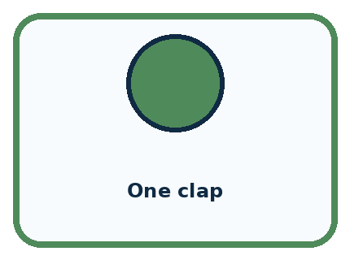
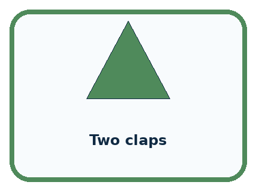
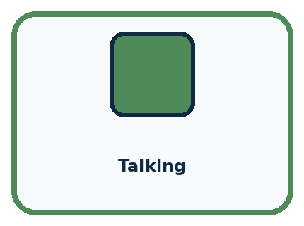
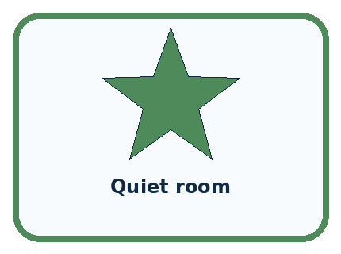
The case to investigate
CASE 1 — One clap Clue: single sharp peak. Meaning: target pattern.
The case to investigate
CASE 2 — Two claps Clue: two separated peaks. Meaning: different timing pattern.
The case to investigate
CASE 3 — Talking Clue: many irregular changes. Meaning: possible false trigger.
The case to investigate
CASE 4 — Quiet room Clue: small background values. Meaning: baseline.
Keep this boundary clear
BOUNDARY A microphone measures a signal; it does not understand a speaker's meaning by itself.
Which two pictures are easiest to confuse? What evidence separates them?
Change one thing in the pictured case
Change one thing
Change: Retain only samples at 0,2,4 ms.
Predicted result
Prediction: Both retained sequences are 0,0,0.
Why the result follows
Reason: The selected times omit both nonzero samples from each signal.
Student lesson · 5 of 18
Words that unlock the idea
Use the vocabulary of Sound Becomes a Signal to explain a concrete decision, rather than only memorising definitions.
VOCABULARY
Words You Can See and Use
The badge is a memory cue; the definition does the real thinking work.
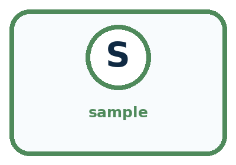
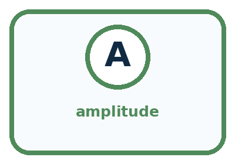
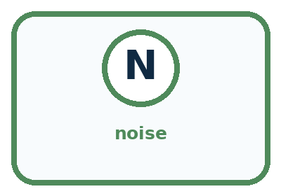
| Word | Meaning | My example |
|---|---|---|
| waveform | graph of a signal changing over time | |
| sample | one measurement at one moment | |
| amplitude | size or strength of a signal value | |
| noise | unwanted signal mixed with the target |
Misconception detective
Find the unsupported claim
CLAIM TO REPAIR A loud sound must be a clap.
Use one vocabulary word and one piece of evidence to repair it:
WORD POWER A strong definition helps you decide something in a new case.
Words used in the closer explanation
| Word | Meaning |
|---|---|
| Signal | A changing physical or recorded quantity that can carry information |
| Sampling interval | The time between successive recorded samples |
| Transcript | A text representation of spoken words, which may contain errors or omit sound details |
Student lesson · 6 of 18
Follow a worked example
Follow the worked trace for Sound Becomes a Signal, predict a step, then compare with its explanation.
WORKED EXAMPLE
Watch the Reasoning, Not Just the Answer
Every step connects a claim to observable evidence.

The case to investigate
CASE A microphone converts air-pressure changes into a sequence of measured values that can be plotted as a waveform.
Step 1
STEP 1 — OBSERVE changing air pressure
Step 2
STEP 2 — TRACE sample the signal and compare a clap pattern
Step 3
STEP 3 — CONCLUDE clap detected, not detected, or uncertain
Model answer
MODEL REASONING Look for two strong peaks separated by the expected gap. Noise may add extra peaks or hide a clap. A safe detector needs thresholds, timing rules, and a not-sure result when evidence is weak.
A claim to avoid
DO NOT OVERCLAIM A microphone measures a signal; it does not understand a speaker's meaning by itself.
What new evidence could change this answer?
A closer explanation
The largest value in 0,2,0,2,0 is 2. The largest value in 0,0,2,0,0 is also 2. The first sequence reaches 2 twice at different times, while the second does so once.
Keeping only the maximum loses that distinction, just as counting black pixels lost their arrangement.
Worked explanation · Sound Becomes a Signal
Sparse measurements can also miss changes. If we inspect the first sequence only at times 0, 2 and 4 milliseconds, all retained values are 0. The two intervening values of 2 disappear from the record.
It would be incorrect to conclude from these retained samples alone that the signal stayed at zero between them.
Worked explanation · Sound Becomes a Signal
More frequent sampling can preserve faster changes under suitable recording conditions, but sampling frequency alone does not make every recording clear.
Microphone placement, background sound, clipping and the recording format can also matter. We are studying one source of missing information, not a complete audio engineering specification.
Learn from the worked case
Cover the result before checking it. Say what is given, choose the procedure, and follow one step at a time. Then uncover the result and explain your first mismatch. Ask why a step is allowed, not only what number it produces.
A pictorial worked case: Sound Becomes a Signal
A fictional microphone display records five samples during a short classroom tap.
The facts we will use
Supplied facts
Times are 0,1,2,3,4 ms in order.
Supplied facts
Signal A: 0,3,0,1,0. Signal B: 0,1,0,3,0. Toy values are signed measurement units; these happen to be nonnegative.


Read the picture one step at a time
Why this result follows
Why the result follows
The sequences contain the same values in different orders. Keeping the maximum preserves peak recorded value while losing its timing.
A graph should keep time on the horizontal axis; shuffling samples changes the recorded signal even if its maximum stays fixed.
What this example does not establish
Keep the stated limit
These sparse toy values cannot establish perceived loudness, pitch or what happened between sampling times.
Keep the stated limit
Read the labelled picture: Does the all-zero retained record prove the full signal was silent? Use the picture.
Keep the stated limit
Change one thing: Retain only samples at 0,2,4 ms. Predict the result before checking the explanation. What remains the same?
Student lesson · 7 of 18
Find and repair a mistake
Find the unsupported step in the Sound Becomes a Signal claim and explain a repair using the supplied evidence.
COMPARE
Same Result, Different Reason
A comparison helps reveal the true concept boundary.
| Case | Evidence | What it shows |
|---|---|---|
| One clap | single sharp peak | target pattern |
| Two claps | two separated peaks | different timing pattern |
| Talking | many irregular changes | possible false trigger |
| Quiet room | small background values | baseline |
Repair two tempting claims
Challenge claim A
CLAIM A A loud sound must be a clap.
Repair:
Challenge claim B
CLAIM B Silence means the sensor has no data.
Repair:
A frame for explaining
STRONG ANSWER FRAME I claim ______ because the evidence shows ______. The process is ______. One limit is ______.
A closer explanation
Check the claim against the facts
A transcript might record the words Fine, thank you while omitting a pause, a laugh or overlapping speech. It might also record the wrong words.
Text can be useful for searching spoken content, but it is not the same representation as the audio. Do not infer a speaker's emotions with certainty from a short transcript.
Check the claim against the facts
In a voice calculator, audio saying sixteen can be transcribed as sixty. A calculator can then correctly divide sixty by four and return fifteen. Inspecting the intermediate transcript identifies the first mismatch.
Confirming the interpreted numbers before acting can prevent this particular error from travelling into a later stage.
Student lesson · 8 of 18
Practise together
Practise Sound Becomes a Signal with support, then explain the deciding step in your own words.
GUIDED PRACTICE
Try It, Check It, Explain It
Use support now so you can succeed independently later.

Explain how the picture story demonstrates this idea: Computers receive changing measurements, not human-like hearing.
Use a fresh example to explain waveform.
Trace a new input → process → output example.
Find and repair the error in: Silence means the sensor has no data.
Invent one edge case and name the safe response.
Check with a partner
PARTNER CHECK Point to the evidence. Do not accept an answer that only repeats the vocabulary word.
A closer explanation
A five-sample record has values 0,3,0,1,0 at times 0,2,4,6,8 milliseconds. Read the timing before answering. The first-to-last duration is the final time minus the initial time, not the sample count multiplied by the gap.
To test a claim about the spaces between samples, construct another possible sequence that agrees at retained times but differs between them.
If both match the stored record, that record alone cannot decide which intervening pattern occurred.
Practise with less help: Inspect what was discarded
Use workbook W2 for the connected example “Sound as sampled information”. First fill the input and rule boxes. Try the middle steps before asking for a hint. After a hint, try the next step yourself.
| Plan | Do | Check |
|---|---|---|
| What is given? Which rule or procedure applies? | Record each intermediate step. | Does the result follow? What remains unknown? |
Explain your trace to a partner. Your partner points to one step to check. Swap roles on the next case. Each person writes their own explanation.
Check your reasoning
Use the worked case for Sound as sampled information. Proposed explanation: “Five samples make five gaps”. Decide whether this explanation is supported.
Point to the step or supplied fact that decides; explain your repair if needed.
Answer on your own before discussion. If you are unsure, say which step you need help with.
Explain the picture
Does the all-zero retained record prove the full signal was silent? Use the picture.
This is supported practice. Keep the separately named independent case for an attempt before feedback.
Student lesson · 9 of 18
Run the investigation
Investigate Sound Becomes a Signal. Record the prediction, actual observation or labelled paper trace, explanation and next test separately.
EXPLORER LAB
Clap Pattern Detector
Predict first, test honestly, and explain what the evidence means.

1. Predict
State your prediction before the result is known.
2. Investigate
Complete the task: Build a clap-pattern detector; test it with background noise.
3. Compare cases
Keep a normal case and an edge case clearly separated.
4. Record honestly
Record what happened—even when it does not match your prediction.
5. Explain and plan the next test
Explain the result, one limitation, and the next useful test.
| Case | Prediction | Observed result | What it means |
|---|---|---|---|
| Normal | |||
| Edge |
Use a fresh case after support
INDEPENDENCE After support is removed, repeat the proof with a fresh case.
Plan → try → check
Before trying: what do I expect, and why? While trying: which step could first go wrong? Afterwards: what did I actually observe, and what should change? Keep “not run” if you only traced the procedure.
Student lesson · 10 of 18
Build your understanding
Move from recall to tracing, diagnosis and transfer in Sound Becomes a Signal. Explain why each step is justified.
PRACTICE LADDER
Climb from Recall to Defense
Each step asks for a stronger kind of understanding.

RECALL Define waveform.
EXPLAIN Computers receive changing measurements, not human-like hearing.
TRACE Show the input, process, and output.
DIAGNOSE Repair: A loud sound must be a clap.
TRANSFER Apply the idea to a new home or classroom case.
CREATE Design one revealing test.
DEFEND Give a claim, evidence, mechanism, limit, and safe action.
When to retry
RETRY RULE A coached answer becomes mastery only after you solve a different case independently.
Student lesson · 11 of 18
Connect your project
Apply this week’s idea to Helpful Classroom Sorter. Keep an annotated decision and the evidence supporting it.
PROJECT
Helpful Classroom Sorter
Build one coherent system across the year, one evidence-based decision at a time.

THIS WEEK'S CHECKPOINT If the sorter uses sound, specify the exact sound pattern needed and test whether classroom noise makes that input unreliable.
What real classroom need does this serve?
What information is necessary—and what should stay private?
What happens inside the process?
What normal and edge cases will you test?
When should it say not sure or ask a person?

Responsible design
RESPONSIBLE DESIGN A microphone measures a signal; it does not understand a speaker's meaning by itself.
My project decision:
Evidence for your project
Record the sorter’s sampling interval and retain relevant sequences when a decision depends on changes over time.
Student lesson · 12 of 18
Show what you know
Use a genuinely new case for independent evidence. Previously discussed examples remain practice; use the separately named independent case before feedback.
MASTERY
Fresh-Case Independent Proof
Complete this after teaching and guided practice have ended.

What success looks like
REQUIRED PROOF Use a waveform strip to decide whether a two-clap pattern occurred, then explain how background noise could cause a missed or false detection.
□ Name or draw the fresh case.
□ Trace input, process, and output.
□ State the conclusion and strongest evidence.
□ Name one limit, failure, missing clue, or fairness/privacy concern.
□ Explain one safe next action or improvement.
Independent evidence:
Check your explanation
SELF-CHECK Look for two strong peaks separated by the expected gap. Noise may add extra peaks or hide a clap. A safe detector needs thresholds, timing rules, and a not-sure result when evidence is weak.
My level: □ Not yet □ With one hint □ Independently □ I can teach it
Connect to the next lesson
NEXT BRIDGE Carry today's evidence habit into: Categories and Labels.
Student lesson · 13 of 18
Study a complete case
Revisit the complete Sound Becomes a Signal case for supported practice. Repeated examples do not become fresh assessments.
Week 6 Worked case
Use the supplied details to practise the weekly concept before attempting the independent question. This case extends the illustrated lesson.
The situation
A microphone records quiet and loud claps at the same distance and settings.
The question
What waveform difference is expected? Does it reveal a spoken word?
Worked explanation
The louder clap generally produces larger amplitude. Amplitude is not word meaning. Distance, gain and noise must be controlled.
Explain it in your own words
Which detail supports the answer, and why does it matter?
Trace the supplied case visually
Sound samples show changes in amplitude
| Evidence or stage | Value or result |
|---|---|
| Quiet clap | 1 |
| Loud clap | 3 |
A microphone records quiet and loud claps at the same distance and settings.
What waveform difference is expected? Does it reveal a spoken word?
The louder clap generally produces larger amplitude. Amplitude is not word meaning. Distance, gain and noise must be controlled.
Student lesson · 14 of 18
Try a new case independently
Attempt the reserved new case before feedback. Record support; the earlier examples below remain additional practice.
Independent case: Construct a new hidden change
A record keeps values 0 at times 0,3,6 milliseconds. Construct two seven-sample sequences for every whole-millisecond time from 0 through 6 that agree with those retained values but differ at omitted times.
Explain why the retained record cannot prove that nothing changed between measurements.
Attempt this case before feedback. Record any help. Earlier examples below are further practice; a case already practised with feedback cannot establish fresh transfer.
Week 6 Independent application
Close the worked explanation. Apply the idea to this different question without copying.
Two recordings contain the same word: one quiet and one loud. Which device receives the sound? Does a larger wave automatically mean a different word? Explain.
My answer, with a trace, calculation or supporting evidence
Create and test
Change one relevant detail. Predict the result before testing. Include a boundary or missing-information case when it helps reveal a limit.
My changed input and expected result
Connect to your project
If the sorter uses sound, specify the exact sound pattern needed and test whether classroom noise makes that input unreliable.
The evidence I will keep
Your teacher has the independent answer and scoring criteria. Complete the matching workbook week to keep your practice evidence together.
Transfer practice from the original programme
A whisper recorded close to a microphone has larger sample amplitudes than a shout recorded far away. Does the recording prove the whisper was louder at its source? Propose one controlled follow-up.
Use feedback to improve
Attempt the independent case before hints. Record whether you worked alone, used a hint or followed a model. After feedback, fix the first unsupported step and explain why it changed.
A later check uses a changed case, not a copied answer.
Student lesson · 15 of 18
Your lesson route
Use this map to navigate Sound Becomes a Signal, connect the goals to tasks and keep one evidence record for each attempt.
Start with this question: A fictional microphone display records five samples during a short classroom tap.
| By the end, I can | How I will show it |
|---|---|
| Interpret an ordered sequence of sound-signal samples with a stated time interval | Explain the deciding step, show a trace or test, and state one limit. |
| Explain why summaries or sparse samples can omit changes | Explain the deciding step, show a trace or test, and state one limit. |
| Separate an audio recording, a transcript and an interpretation of meaning | Explain the deciding step, show a trace or test, and state one limit. |
Remember → watch and explain → try with help → investigate → try independently → keep project evidence. Your teacher may spread this lesson across several classes.
Keep your first prediction. Compare it with what the evidence shows and explain any change.
Student lesson · 16 of 18
Finish and return
Explain Sound Becomes a Signal without notes, identify a remaining question and plan a later check with a changed case.
Close your notes. Explain this goal in your own words: Interpret an ordered sequence of sound-signal samples with a stated time interval
If you are unsure, return to the worked picture and explain one arrow. If you are ready, change an input or assumption and justify your prediction.
Save your workbook evidence. At the next review, try a different case before opening your old answer.
Student lesson · 17 of 18
Supported practice, repair and portfolio
Attempt supported questions before using hints or feedback. Review a missing building block, then keep the completed work.
Use this supported practice once, in the browser or on paper. Keep the reserved independent assessment for a separate first attempt before teacher feedback.
A fictional microphone display records five samples during a short classroom tap.
Practice 1: explain the deciding evidence
Which labelled step matches this detail? Both maxima are 3, but the strongest recorded tap arrives at different times.
1. Signal A
2. Signal B
3. Maximum summary
4. Timed sampling
Hint · try first
Hint if needed: Read the steps in the pictorial case. Match the supplied detail to the stage that performs or records it.
Feedback · compare after trying
After your attempt, compare with the supported explanation: Maximum summary Both maxima are 3, but the strongest recorded tap arrives at different times. The sequences contain the same values in different orders.
Keeping the maximum preserves peak recorded value while losing its timing. A graph should keep time on the horizontal axis; shuffling samples changes the recorded signal even if its maximum stays fixed.
Practice 2: explain the deciding evidence
Changed case · predict first
Changed-case practice: Retain only samples at 0,2,4 ms. Which conclusion is supported by the supplied facts?
1. This one example guarantees correct results for every future input.
2. We can decide the result without examining the changed input or the procedure.
3. Both retained sequences are 0,0,0.
Hint · try first
Hint if needed: Use the changed condition and the deciding step in the pictorial trace. The answer must say what follows from those facts.
Feedback · compare after trying
After your attempt, compare with the supported explanation: Both retained sequences are 0,0,0. The selected times omit both nonzero samples from each signal.
Repair a missing building block
Review Pictures Become Numbers (ai-1/5). Goal: Encode and reconstruct a small image using an explicit grid convention.
Short practice: Find a position where the original badges differ, then read the changed A back as a picture.. Return to this week and explain what you changed.
Review Sensors Are Messengers (ai-1/3). Goal: Describe a measurement using its quantity, value, unit and conditions. Short practice: Why can we calculate the earlier gap but not predict an exact new B reading?.
Return to this week and explain what you changed.
Keep your completed work
Use Download completed work in the hosted lesson to export your answers, reflections, practice feedback and code-run evidence. Open the HTML copy to read or print it.
Drafts stay in this browser when storage is available; clear drafts on a shared device.
Student lesson · 18 of 18
Visual concept journey
Explain each Sound Becomes a Signal graphic using its labels, deciding evidence and relevant limitation.
01. Sound Becomes a Signal: the case

A fictional microphone display records five samples during a short classroom tap. Supplied facts: Times are 0,1,2,3,4 ms in order. Signal A: 0,3,0,1,0. Signal B: 0,1,0,3,0.
Toy values are signed measurement units; these happen to be nonnegative.
Point to the given fact that matters most. Explain why it matters.
02. Follow the deciding steps

Timed sampling: Associate every measurement with its sampling time. → Signal A: Its largest sample 3 occurs at 1 ms. → Signal B: Its largest sample 3 occurs at 3 ms. → Maximum summary: Both maxima are 3, but the strongest recorded tap arrives at different times.
Point to each numbered stage and explain which recorded input it uses.
03. Same peak, different sample timing

Same peak, different sample timing. Signal A: 0 ms = 0, 1 ms = 3, 2 ms = 0, 3 ms = 1, 4 ms = 0. Signal B: 0 ms = 0, 1 ms = 1, 2 ms = 0, 3 ms = 3, 4 ms = 0.
Read the labels and values. Explain the relationship the model shows.
04. Change one thing. Trace what follows.

Original case: Both maxima are 3, but the strongest recorded tap arrives at different times. Changed condition: Retain only samples at 0,2,4 ms. Expected result: Both retained sequences are 0,0,0.
Reason: The selected times omit both nonzero samples from each signal.
Predict before checking the worked changed-case result. Name what changed and what the supplied facts allow you to conclude.
05. Connect the explanation to its limit

The sequences contain the same values in different orders. Keeping the maximum preserves peak recorded value while losing its timing.
A graph should keep time on the horizontal axis; shuffling samples changes the recorded signal even if its maximum stays fixed.
Limit: These sparse toy values cannot establish perceived loudness, pitch or what happened between sampling times.
Explain the case, then point to a limit on the claim.
06. Make the idea visible in your project

Record the sorter’s sampling interval and retain relevant sequences when a decision depends on changes over time. Draw your input, deciding step, result and limit.
Supported question: Does the all-zero retained record prove the full signal was silent? Use the picture.
Draw your project trace and justify the deciding step using evidence.